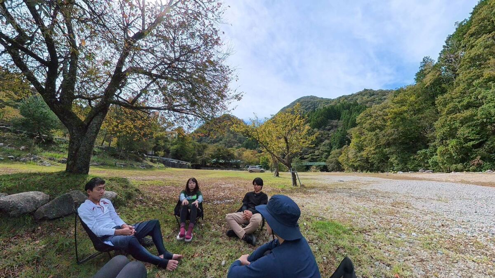
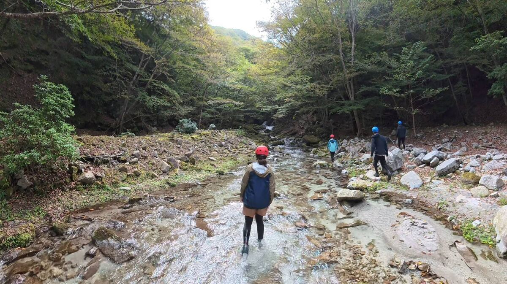
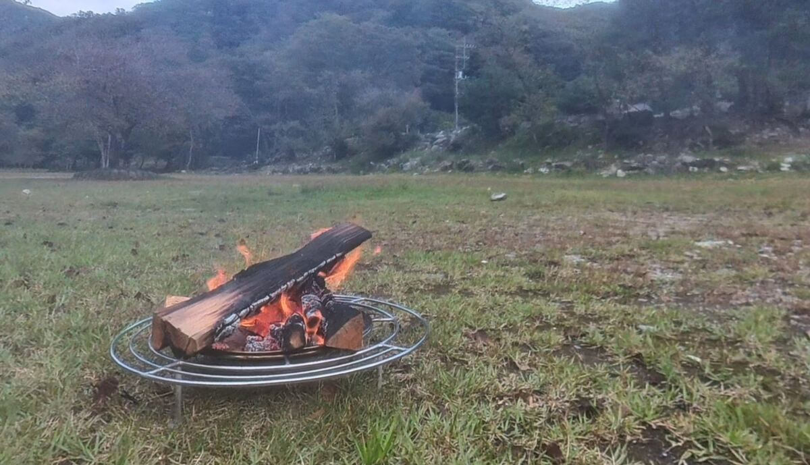

飽きない美しい渓相の沢
約190m高低差
約3km歩く距離
夏の川遊びツアーでも使っている沢を歩きます。飽きない美しい渓相が魅力。夏のツアーでは行かない天然の大滝のところまで、ゆっくりと川を遡行します。
沢を歩く 滝に出会う
神奈川県西丹沢の美しい渓流で過ごす
1DAY沢歩きツアー
春の新緑。
秋の色づく森。
ひんやりとした沢の水。
川を歩く。
じゃばじゃば進む。
それだけで
なぜだか心が浮き立つ。
「私って何がしたいんだっけ？」
「何が楽しいんだっけ？」
真面目に考えるほど、
答えは遠くなる。
気付いたら踏み出しているその一歩が
あなたの感性そのもの。
頭ではなく、身体で探しにいこう。
一緒に川を歩きませんか？

思考を静め、身体感覚をより感じられるようなエクササイズをした後、参加者同士での自己紹介＆今あることを分かち合うときを過ごします。

大きな滝があるところまで、川をゆっくり遡行します。
※コースによっては、堰堤を越えるために登山道を登ったり、岩を少しだけよじ登ったりする必要があります。

自然で遊び、解放しきった身体で、今日の体験を火を囲みながら共有します。
どのコースも、大きな滝を目指して沢をゆっくり遡行します。
夏の川遊びツアーでも使っている沢を歩きます。飽きない美しい渓相が魅力。夏のツアーでは行かない天然の大滝のところまで、ゆっくりと川を遡行します。
西丹沢ビジターセンターほど近くの沢を歩きます。綺麗な渓相を楽しみながら、40mの高さの大滝まで川をゆっくり遡行します。それなりの高低差と途中の堰堤越えで、一定の体力を使います。
西丹沢の奥の奥の沢を歩きます。前半は開けた河原を、後半は静かな森の中を流れる川を遡行し、高さ30mの大迫力の大滝を目指します。
※ツアーの進行状況、交通状況等により前後します。
1991年生まれ、35歳。
エンジニアを辞めて、川遊びのガイドになりました。
多くの人と川で遊ぶ中で
確信したことがあります。
それは、
川で遊んでいると誰もが勝手に
自分らしくなっていくということ。
頭で考えて悩む必要なんて何もない。
川で過ごしたその体験が
すべて教えてくれます。
一緒に川遊びしませんか？
お一人でのご参加、大歓迎です。少人数制で参加者間の交流も重視していますし、一緒に川で遊ぶと不思議な一体感が生まれます。むしろ、日常の関係性（仕事や家族の役割）から一歩離れた場所で、ただ「わたし自身」を感じるためにも、お一人でのご参加はとてもおすすめです。
大変恐れ入りますが、当プログラムは高校生以上の方を対象としております。コース自体は小学生でも歩ける安全な場所ですが、このリトリートは「大人が日常の役割をオフにして、自分自身を省みること」を何より大切にしているためです。
基本的にゆっくり歩きますが、コースによってはそれなりの高低差があったり、岩を少しだけよじ登ったりする必要があるため、一定の体力を使います。必要な方はご相談ください。
多少の雨であれば開催しますが、増水の可能性があるなど、危険が予測される場合は安全を最優先して中止とさせていただきます。その場合、キャンセル料は一切かかりませんのでご安心ください。開催の判断は可能であれば、前日の19時までに、難しければ当日の朝、個別にご連絡いたします。
いずれのコースもキャンプ場を拠点としますので、トイレも着替え場所もあります。
丹沢湖から現地の駐車場までの道のりに、車1台分の幅しかない箇所が数か所あります。道幅自体はそれほど狭くはなく、対向車さえいなければ基本的には問題なく通行できますし、すべて舗装された道路で、林道や山道を通ることもありません。とはいえ、運転に自信がない方には少し緊張する道のりかもしれません。ご不安な場合は、無理をせず新松田駅集合をお選びください。
めったに出会うことはありませんが、野生のフィールドであることをご理解ください。プログラムを行うエリアは道路や登山道に隣接しており、人の往来が比較的多いため、私自身もこれまでに遭遇したことはありません。ただし、クマが生息している山域であることは確かですので、「100%絶対に遭遇しない」と言い切ることはできません。ご不安な場合はいつでもご相談ください。